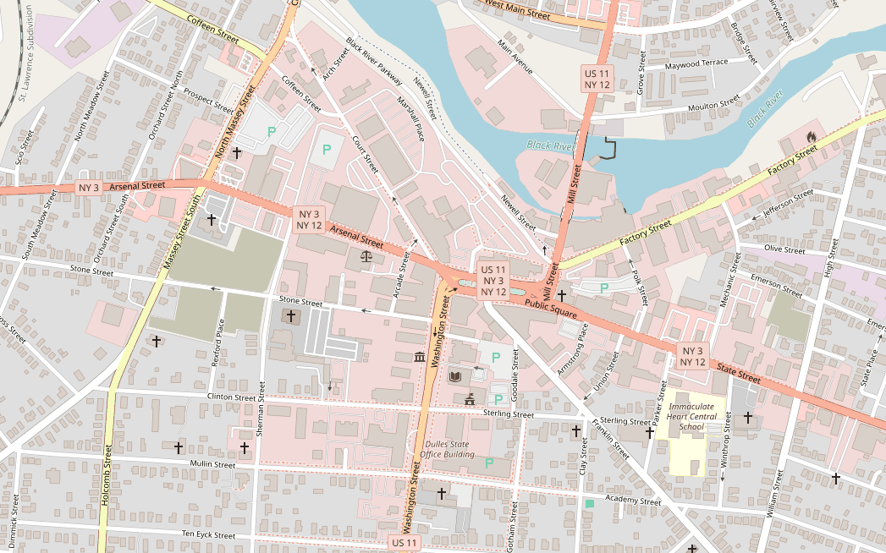

A data-driven culture is a setting in which everyone with a role in planning, implementation, and decision-making is informed by appropriate evidence. Not everyone needs to be data-savvy — but someone needs to be, and that person must understand the needs of those who are not.
“Appropriate evidence” means something specific here. Given constrained time and resources for collecting, analyzing, and reporting, it is the best available information on the state of the community, the evidence base for feasible interventions, and the program’s own activities. Everything below follows from taking that constraint seriously.
Five principles organise the rest:
Alice: Would you tell me, please, which way I ought to go from here?
Cheshire Cat: That depends a good deal on where you want to get to.
Alice: I don’t much care where.
Cheshire Cat: Then it doesn’t much matter which way you go.
Alice: …So long as I get somewhere.
Cheshire Cat: Oh, you’re sure to do that, if only you walk long enough.
— Lewis Carroll, Alice’s Adventures in Wonderland
Most organizations have goals that aren’t articulated clearly. The key question is when wandering is useful, when it is benign, and when it causes harm. Those who are not careful about their measures cannot be careful about their decisions.
Organizations need to set goals and build measures. But they also need to align the two, and to organize themselves around that alignment.
The standing risk — measures should be downstream from goals, but goals are always at risk of being warped by their own measures.
The premodern state was partially blind; it knew precious little about its subjects, their wealth, their landholdings and yields, their location, their very identity. It lacked anything like a detailed ‘map’ of its terrain and its people. It lacked measures that would allow it to ‘translate’ what it knew into a common standard necessary for a general view. As a result, its interventions were often crude and self-defeating.
— James Scott, Seeing Like a State (1998)
Legibility refers to how understandable a system is from a central viewing point — the view from above. Systems become more legible when they are simplified, standardized, and recorded. Permanent last names, standardized weights and measures, property law, the census, currency, occupational licenses, scientific forestry: each one made a population easier to see, and each one did so by throwing away most of what was there.
A measure is a number you have decided to focus on in order to make better decisions. The contrast is with data: measures are the numbers that you — or someone, at any rate — have decided are important. A measure counts as a measure if it tells you more than you knew before, no matter how flawed or fuzzy it is.
Selecting one means asking how reliable it is, how timely it is (accounting for both collection and analysis), what it costs, and whether it is valid — that is, whether you are really measuring what you intend to measure. And one more question that is easy to skip: will your audience understand it?
In 2011 the non-profit DoSomething.org posted a YouTube video featuring well-known celebrities encouraging young people to donate used sports equipment. It became their most popular video ever.
Drawn to scale, the second figure would be one 187,500th the width of the first — too small to render on any screen. That is the point: the gap between a vanity metric and a meaningful one is not a matter of degree.
Analyzing the data is often the easy part. The hard part is deciding what data matters. Assume two important goals: if you measure A but not B, A will get more attention, whether you intend it to or not.
…In that Empire, the Art of Cartography attained such Perfection that the map of a single Province occupied the entirety of a City, and the map of the Empire, the entirety of a Province. In time, those Unconscionable Maps no longer satisfied, and the Cartographers Guilds struck a Map of the Empire whose size was that of the Empire, and which coincided point for point with it.
The following Generations, who were not so fond of the Study of Cartography as their Forebears had been, saw that that vast map was Useless, and not without some Pitilessness was it, that they delivered it up to the Inclemencies of Sun and Winters.
— Jorge Luis Borges, “On Exactitude in Science”

The map is not the territory — but it has a similar structure, which accounts for its usefulness. Measures are representations of what ultimately matters. All models are wrong, but some are useful; in program measurement and evaluation, as in all research, what we are looking for is the best approximation of reality.
Intuition is fallible. Trust can be misplaced. Complexity is irreducible. Measurement is what makes complicated systems understandable — but what simplifies also, necessarily, obscures and distorts, and careless use of measures disrupts the very goals they were meant to support.
Gary Klein’s 1985 study Rapid Decision Making on the Fire Ground asked how highly proficient personnel make decisions under extreme pressure. The answer was that they compare the instance in front of them to prototypes drawn from experience, and apply the prescribed response for that prototype. The exception is the unfamiliar or novel situation — which is precisely where measurement earns its keep.
Opinions, feelings, testimony, reactions. Transcripts, open-response questionnaire answers, field notes, photographs, meeting minutes. Qualitative data is less generalizable, harder to aggregate, and more subjective in interpretation — but it offers a holistic perspective, and thoughtful use of it is the best way to use intuition.
Measures get used for planning, education, accountability, and evaluation. These are different jobs, and a measure built for one of them is not automatically fit for another.
Interpretation has its own vocabulary: percentages and rates, group comparisons, rank and relative standing, external benchmarks, trends. Each carries its own way of being misread.
Evaluation asks why, not just how or what. It tells a complete story about how a program is meeting its goals, in four stages:
Each stage presupposes the one above it. An outcomes assessment on a program whose theory was never articulated will produce a number, and that number will not mean anything.